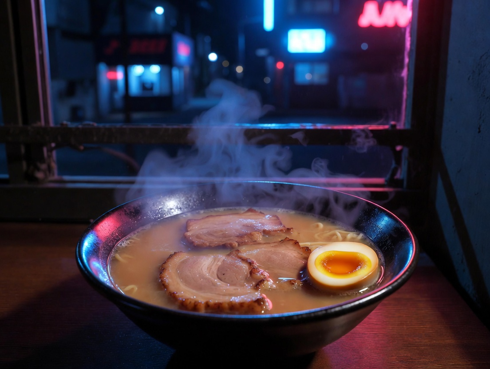
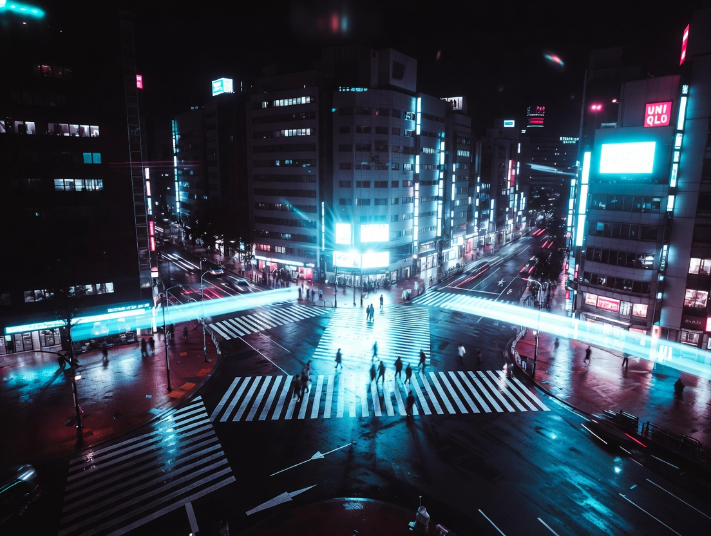

// verified late-night venues
Where to Go
Right Now
All venues below are open late or 24 hours. Hours are verified but always confirm before you go — Tokyo restaurants keep their own time.

RamenFuunji
風神 — Shinjuku
Open until late — check Google Maps
📍 Shinjuku · 5 min walk from station
Tsukemen (dipping ramen) that people queue for at midnight. Rich, intense broth. Cash only. Small counter. Worth every minute of the line.
Hours vary — verify before going
→ Open in Google Maps
 Ramen
Ramen
Ichiran
一蘭 — Multiple Locations
Open 24 hours — most locations
📍 Shinjuku · Shibuya · Akihabara
Solo booths designed for the lone, jet-lagged diner. Order by form. No eye contact required. The tonkotsu is consistent and deeply comforting at 3AM.
→ Open in Google Maps
Golden Gai
新宿ゴールデン街
Most bars open until 4–5AM
📍 Shinjuku · Behind Kabukicho
200+ tiny bars in an alley frozen in 1970. Some seat 5 people. Some have themes. Some have cover charges. All are extraordinary. Follow your instincts or the music.
→ Open in Google Maps
Albatross G
アルバトロス — Golden Gai
Open until 5AM most nights
📍 Shinjuku Golden Gai
A narrow vertical bar with a spiral staircase and a gothic chandelier. Friendly to foreigners. One of the most photogenic bars in Tokyo. Arrive after midnight.
Hours change — verify before going
→ Open in Google Maps
24H
7-Eleven / Family Mart
コンビニ — Everywhere
Open 24 hours · Every block
📍 Literally everywhere in Tokyo
The Japanese convenience store is a cultural institution. Fresh onigiri, hot oden, ATM that accepts foreign cards, free WiFi, clean bathrooms. Your midnight base camp.

WalkShibuya Crossing
渋谷スクランブル交差点
Open always — trains stop ~1AM
📍 Shibuya · Hachiko Exit
Still active at 2AM on weekends. After the last train the crowd shifts — less salary workers, more night creatures. The scramble crossing has a different energy after midnight.
→ Open in Google Maps
 Walk
Walk
Shinjuku Kabukicho
歌舞伎町
Never sleeps
📍 Shinjuku · East Exit
Tokyo's entertainment district in full neon at 3AM. The Robot Restaurant is closed but everything around it is alive. Walk through for the spectacle — you don't need to spend money.
→ Open in Google Maps
Onsen
Late Night
Jet Lag
Thermae-Yu
テルマー湯 — Shinjuku
Open 24 hours
📍 Shinjuku · 5 min from Kabukicho
A proper onsen in central Shinjuku. Open all night. Natural hot spring water pumped from underground. The ultimate jet lag treatment — soak at 3AM, sleep like a baby.
→ Open in Google Maps
Walk
 Ramen
Ramen
Ueno Park at Dawn
上野公園 — 5AM
Park open 24h · Best at 5AM
📍 Ueno · Direct from JR station
If you're still awake at 5AM, come here. Cherry blossom season aside, it's beautiful when empty. Old women do morning exercise. Crows are loud. Sunrise hits the pond perfectly.
→ Open in Google Maps
Ramen
Nagi Shinjuku
凪 — Golden Gai
Until 7AM / 9AM weekends
📍 Shinjuku · Golden Gai
Niboshi (dried sardine) based broth unlike anything you've had. Located above Golden Gai. The 4AM bowl after bar hopping is a rite of passage for the nocturnal in Shinjuku.
Hours vary by season — verify
→ Open in Google Maps
// find it on the map
Late Night
Tokyo Map
🍜 Ichiran Shinjuku
🏮 Golden Gai
♨️ Thermae-Yu
🚶 Shibuya Crossing
🌃 Kabukicho
🌅 Ueno Park
🍜 Nagi Ramen
🥃 Albatross G
Click any spot above to open exact location in Google Maps → get directions from your hotel
// staying sane at 3am
Jet Lag
Survival Guide
01
Don't fight it
The worst thing you can do is lie in bed angry at the ceiling. If you're awake, Tokyo wants you. Get dressed. Go outside. The city is different at night and you have earned this view.
02
Konbini is your friend
7-Eleven, Lawson, and Family Mart are not just convenience stores. They are restaurants, pharmacies, ATMs, and community centers. The onigiri is fresh every few hours. Get one at 2AM.
03
The Yamanote Loop
Trains stop around 12:30AM and restart around 5AM. If you're stuck out, the Yamanote Line all-night bus follows the same loop. Or just embrace the taxi — they're everywhere and metered.
04
Sunlight resets the clock
Get outside by 7AM. Sunlight is the most powerful circadian reset available. Even 20 minutes of morning sun — especially in a park — will shift your body clock faster than any supplement.
05
Avoid the nap trap
The long afternoon nap is tempting and catastrophic. If you must sleep, set an alarm for 20 minutes. Sleeping 2+ hours in the afternoon guarantees you'll be awake until 4AM again.
06
Eat on Tokyo time
Your body syncs to local time partly through meal timing. Even if you're not hungry, eat breakfast when Tokyo eats breakfast. Find a morning teishoku set. Signal to your body that this is now.